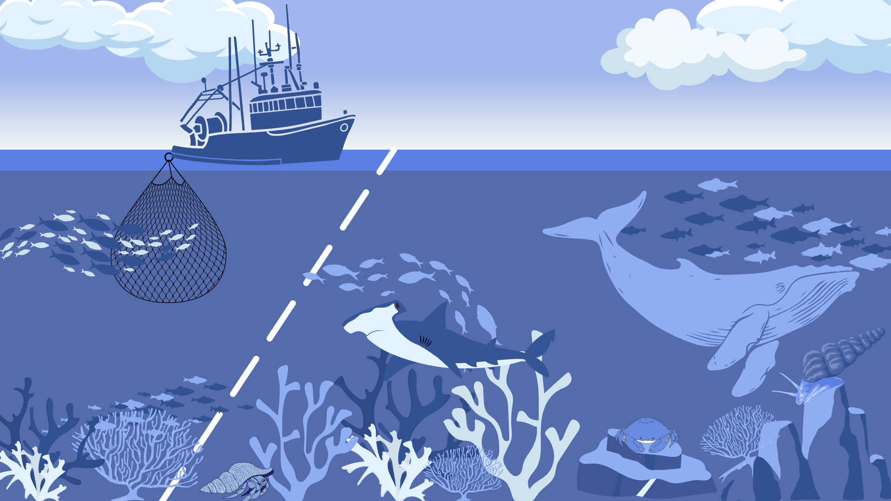
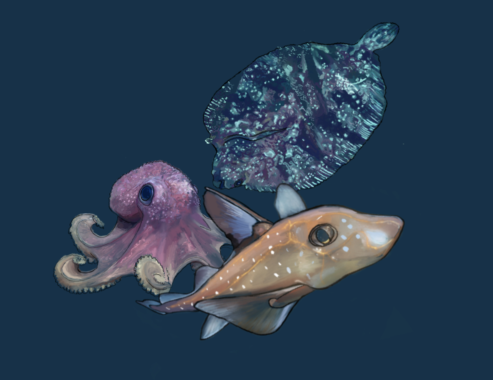
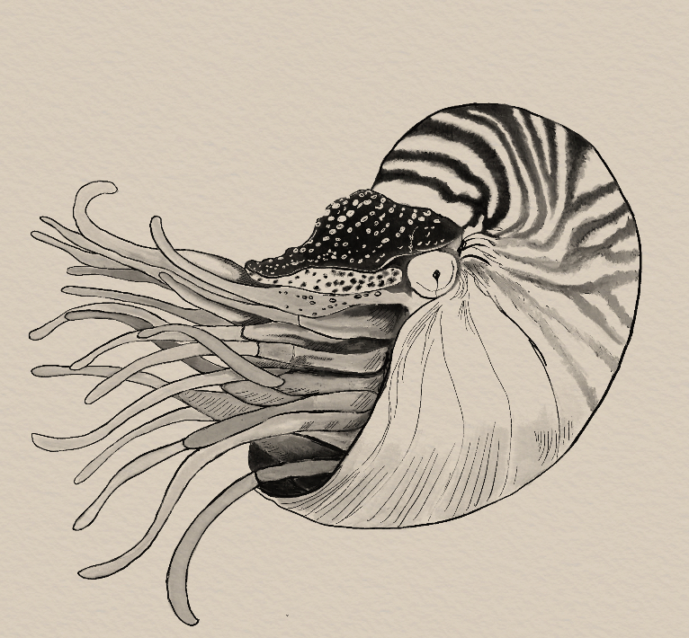
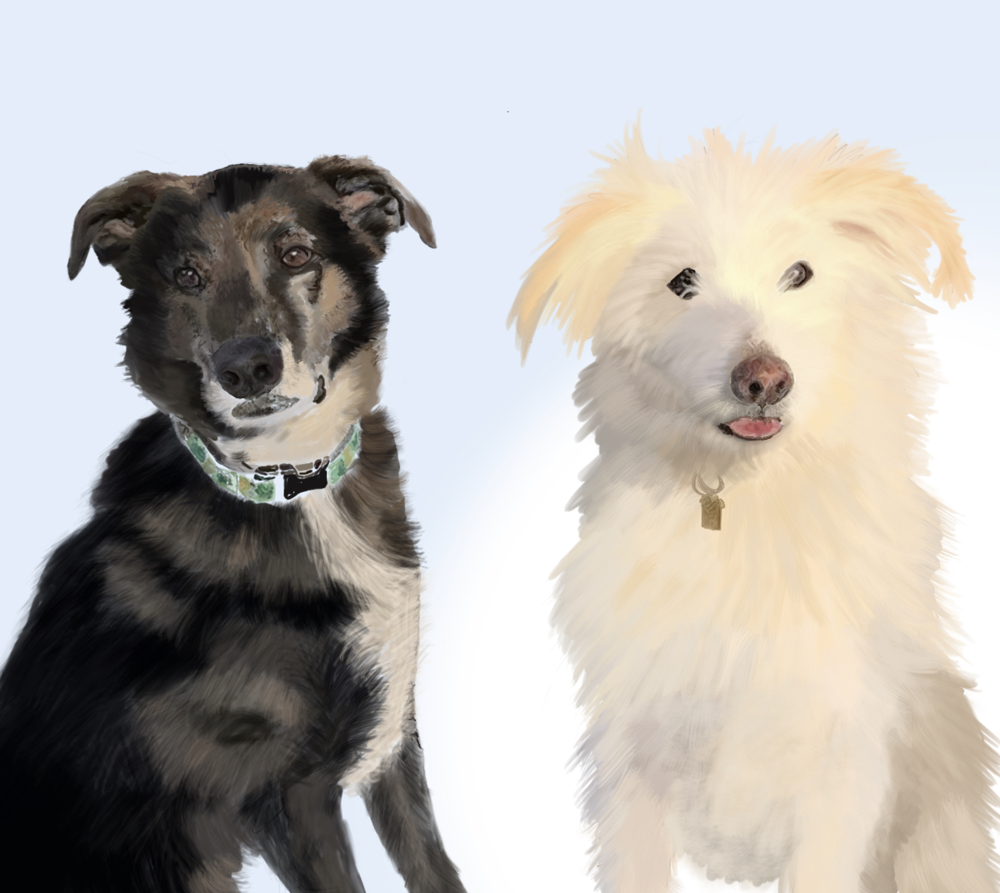

Selected work
Science communication & diagrams

Inside and outside a Marine Protected Area

Functional groups & species traits
Natural history & species illustration

Deep-sea creatures

Nautilus

Dog portraits
Current commissioned work is in Adobe Illustrator — personal and exploratory work above is in Procreate.